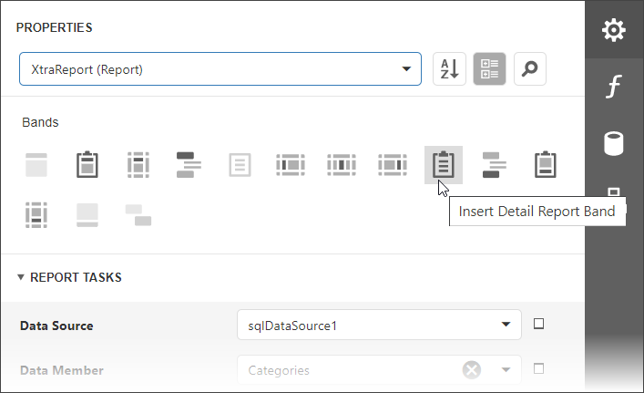
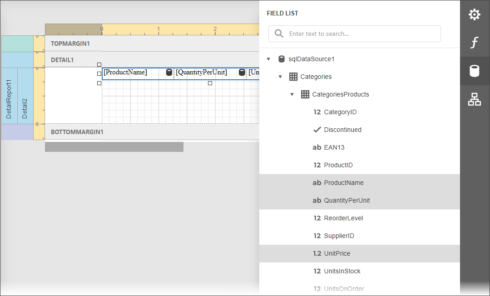

Create a Master-Detail Report (Use Detail Report Bands)
This tutorial illustrates how to display hierarchical data in a master-detail report using nested Detail Report bands. This approach is effective if your data source contains master-detail relationship. Another way is described at Create a Master-Detail Report (Use Subreports).

Bind the report to a required data source and provide it with a master-detail relationship as described in the Bind a Report to a Database topic.
Drop the required data fields from the Field List onto the Detail band.

Expand the Actions category and click Insert Detail Report Band to create a Detail Report Band.

Select the Detail Report band and select the master-detail relationship's name in the Data Member property's drop-down list.

Switch to the Field List, select the data fields while holding down CTRL or SHIFT and drag-and-drop them onto the Detail band.

Note
You should drag-and-drop fields from the category corresponding to the master-detail relationship to correctly generate the detail report's data. Otherwise, the report will display only the first record of the detail table as many times as there are records in this table.
If required, customize the report's appearance and format values.
Switch to Print Preview to see the resulting report.